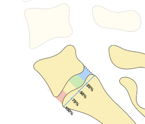
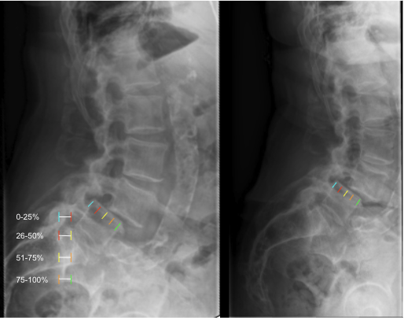

Gaillard F, Knipe H, O'Shea P, et al. Meyerding classification of spondylolisthesis. Reference article, Radiopaedia.org (Accessed on 17 Dec 2025) https://doi.org/10.53347/rID-2076

1) Description of Measurement
The Meyerding Classification is a quantitative method used to grade lumbar spondylolisthesis based on the percentage of anterior translation of L5 over S1. The grading system is determined by dividing the superior endplate of S1 into four equal quarters and identifying how far the posterior-inferior corner of L5 has translated anteriorly relative to this subdivided sacral base.
When measured on flexion and extension radiographs, the Meyerding grade also provides insight into dynamic instability, as change in slip percentage between positions indicates loss of functional support from disc, facets, and ligamentous structures.
2) Instructions to Measure
3) Normal vs. Pathologic Ranges
Dynamic instability thresholds:
4) Important References
Meyerding HW. Spondylolisthesis; surgical treatment and results. Surg Gynecol Obstet. 1932;54:371–377.
Wiltse LL, Newman PH, Macnab I. Classification of spondylolisis and spondylolisthesis. Clin Orthop Relat Res. 1976;117:23–29.
Boxall D, Bradford DS, Winter RB, Moe JH. Management of severe spondylolisthesis in children and adolescents. J Bone Joint Surg Am. 1979;61:479–495.
Hresko MT, Labelle H, Roussouly P. Classification based on pelvic balance. Spine. 2007;32:2208–2213.
Dupuis PR et al. Degenerative spondylolisthesis: flexion-extension criteria. Spine. 1992.
5) Other info....
The Meyerding method is the standard system for grading spondylolisthesis and is widely used in deformity classification, preoperative planning, and postoperative evaluation.
Flexion–extension imaging adds value by determining whether the slip is stable or unstable, guiding decisions on fusion versus decompression alone.
Dynamic slip progression is often associated with:
In high-grade slips, Meyerding classification should be supplemented with:
EOS imaging can improve measurement reproducibility in large deformities.
You may document both values as: